TRIP OVERVIEW
Day 1 – Rijksmuseum · Van Gogh Museum · Vondelpark
Day 2 – Anne Frank House · Westerkerk · Negen Straatjes · Amsterdam Canal Cruise
Day 3 – Hortus Botanicus · Portuguese Synagogue · NEMO Science Museum · Begijnhof
Day 4 – Jewish Historical Museum · EYE Filmmuseum · A'DAM Lookout
Day 5 – 🚆 Train Day — Utrecht
Day 1
🏨 From Hotel: 🚶 25 min · 🚕 10 min → Rijksmuseum
1.
Rijksmuseum
↳ The greatest collection of Dutch Golden Age art on earth. Rembrandt's Night Watch, Vermeer's Milkmaid, and two centuries of masterworks fill a towering 19th-century building that is itself a monument — the single most important stop in Amsterdam.
🏛️ Daily 9:00am - 5:00pm
⏰ ~2 hrs 30 min
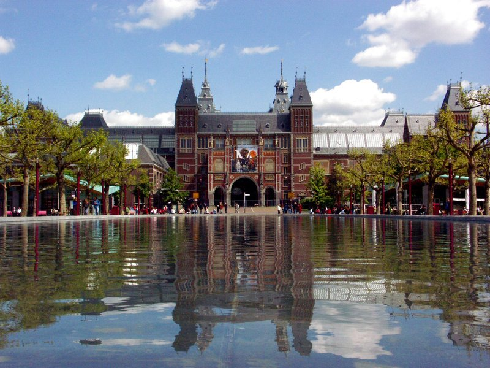
🚶 3 min · 🚕 3 min → Van Gogh Museum
2.
Van Gogh Museum
↳ The world's largest collection of Van Gogh's works — over 200 paintings and 500 drawings tracing his entire career. Almond Blossom, Sunflowers, The Bedroom: the real canvases in one building. No other museum concentrates this much Van Gogh.
🏛️ Daily 9:00am - 6:00pm
⏰ ~1 hr 30 min
⚠️ Timed-entry tickets sell out weeks ahead — book online before the trip.
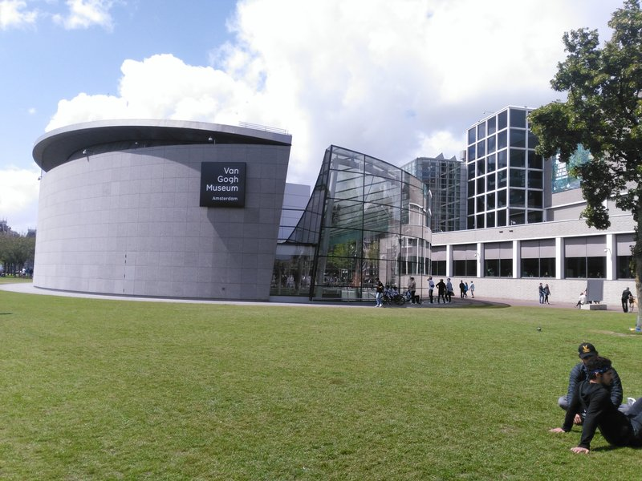
🚶 4 min · 🚕 4 min → Vondelpark
3.
Vondelpark
↳ Amsterdam's beloved 47-acre park — a living room for the city. Landscaped in English garden style with canals, rose gardens, and a Victorian pavilion. The open-air stage runs free summer concerts from June through August. The perfect reset after a museum day.
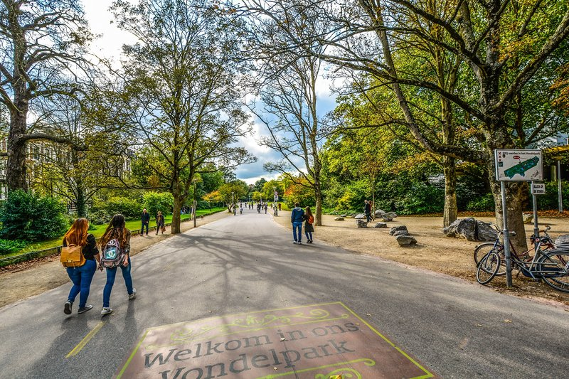
🚶 28 min · 🚕 13 min → hotel
Day 2
🏨 From Hotel: 🚶 30 min · 🚕 12 min → Anne Frank House
1.
Anne Frank House
↳ The actual hiding place where Anne Frank wrote her diary for two years. The Secret Annex, her room, the original bookcase door — all preserved. One of the most affecting historical sites in Europe, told on a deeply human scale that no museum exhibit can replicate.
🏛️ Daily 9:00am - 10:00pm
⏰ ~1 hr 30 min
⚠️ Tickets released every Tuesday at 10am local time, six weeks ahead — sell out in hours during peak season.
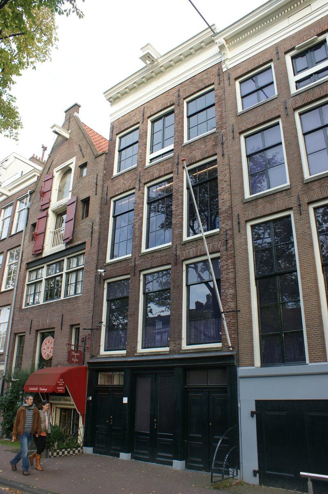
🚶 1 min · 🚕 1 min → Westerkerk
2.
Westerkerk
↳ Amsterdam's grandest Protestant church, built 1620 - 1631 by Hendrick de Keyser. Rembrandt is buried somewhere inside — the exact location lost to history. The 85m Westertoren with its Imperial Crown dominates the entire Jordaan skyline and was visible from the Secret Annex.
🏛️ Monday - Friday 11:00am - 3:00pm
🚫 Closed Saturday & Sunday
⏰ ~30 min
🆓 Free
⚠️ Tower closed for restoration — exterior and church nave open.
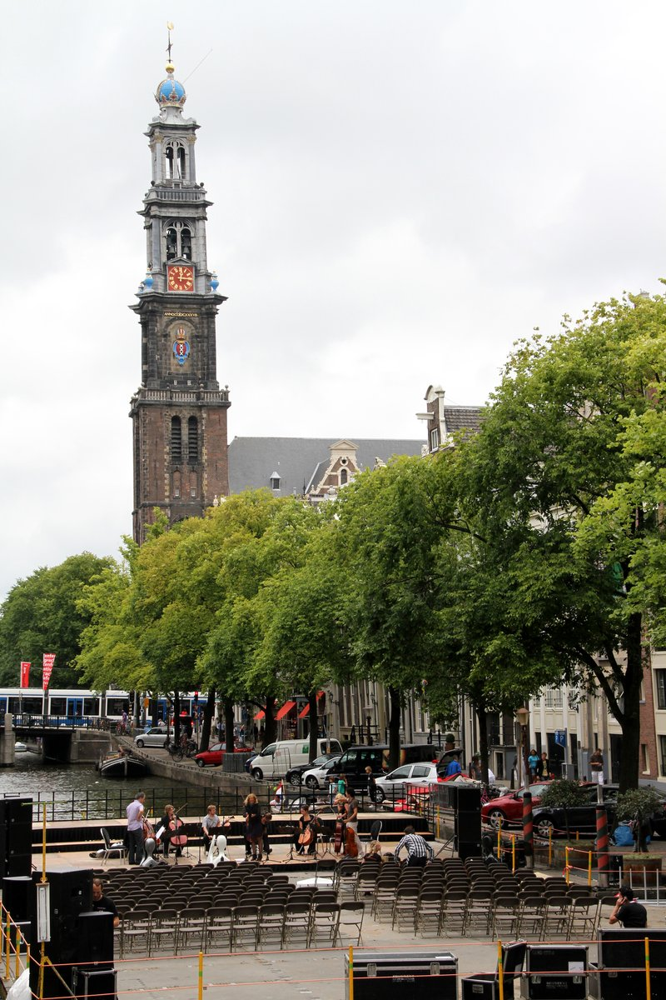
🚶 3 min · 🚕 3 min → Negen Straatjes
3.
Negen Straatjes
↳ Nine historic cross-streets threading the Jordaan canal ring — Amsterdam's most charming pedestrian stroll. Independent boutiques, specialty food shops, and terrace restaurants tucked into 17th-century canal-house ground floors. The antidote to every tourist-trap shopping street in the city.
No pictures found.
🚶 8 min · 🚕 5 min → Amsterdam Canal Cruise
4.
Amsterdam Canal Cruise
↳ A 90-minute small-group cruise through the UNESCO-listed Golden Age canal ring — the only way to see the canal houses, humpbacked bridges, and houseboats at water level. The morning slot keeps it intimate before the tour-boat rush arrives.
🏛️ Daily 9:00am - 12:00pm
⏰ ~90 min
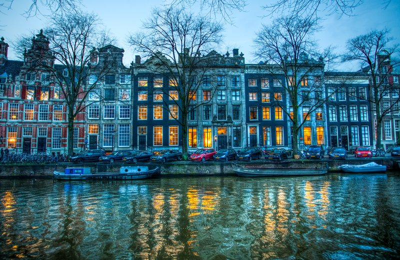
🚶 25 min · 🚕 10 min → hotel
Day 3
🏨 From Hotel: 🚶 5 min · 🚕 3 min → Hortus Botanicus
1.
Hortus Botanicus Amsterdam
↳ One of the world's oldest botanical gardens, founded in 1638 as a medicinal herb garden for the city's physicians. Today holds 6,000 plant species across three climate greenhouses — including a 300-year-old Eastern Cape cycad and the coffee plant that seeded all of Latin America's coffee culture.
🏛️ Daily 10:00am - 5:00pm
⏰ ~1 hr
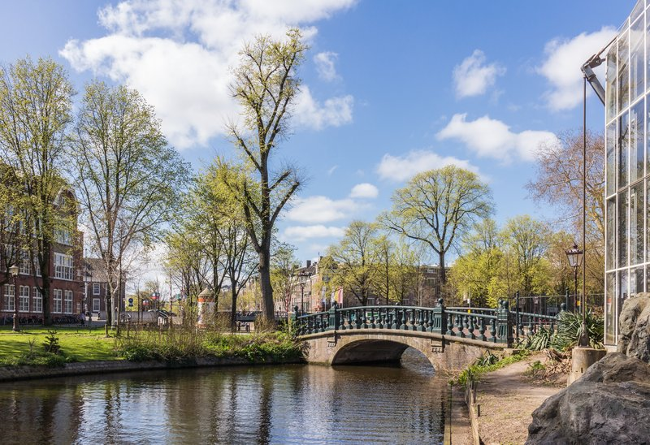
🚶 6 min · 🚕 3 min → Portuguese Synagogue
2.
Portuguese Synagogue
↳ Built in 1675 and still lit by 1,000 candles — no electricity was ever installed. One of the largest and best-preserved synagogues in the world, its sand-covered floors and towering Tuscan columns unchanged since the Sephardic community built it after fleeing the Inquisition.
🏛️ Sunday - Friday 10:00am - 5:00pm
🚫 Closed Saturday
⏰ ~45 min
⚠️ Friday closes at 4:00pm. Dress code: shoulders covered; men must wear a kippa.
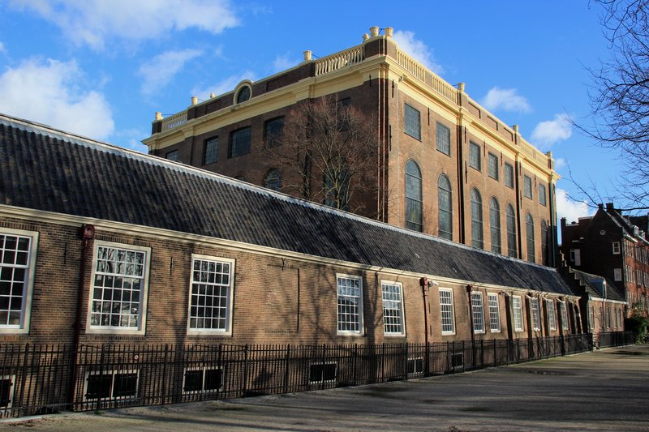
🚶 10 min · 🚕 5 min → NEMO Science Museum
3.
NEMO Science Museum
↳ Renzo Piano's copper-clad ship hull rises from the IJ waterfront — the building is a landmark before you walk in. The rooftop terrace gives a panoramic view over the old port and city rooftops and is free to visit without a museum ticket.
🏛️ Tuesday - Sunday 10:00am - 5:00pm
🚫 Closed Monday
⏰ ~1 hr 30 min
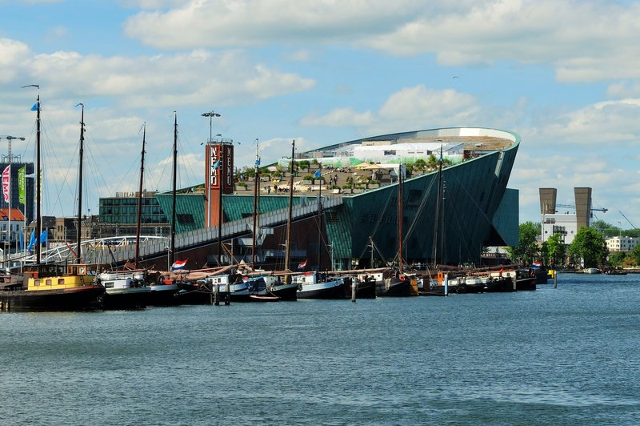
🚶 17 min · 🚕 7 min → Begijnhof
4.
Begijnhof
↳ A hidden medieval courtyard entered through an unmarked door in the city center. Dating to 1346, it housed the Beguines — lay religious women who lived under vows of chastity. The oldest surviving wooden house in the city, No. 34, built c. 1420, stands here. Almost no tourists find it.
🏛️ Daily 9:00am - 5:00pm
⏰ ~40 min
🆓 Free
⚠️ Quiet courtyard — speak softly; no photography inside private dwellings.
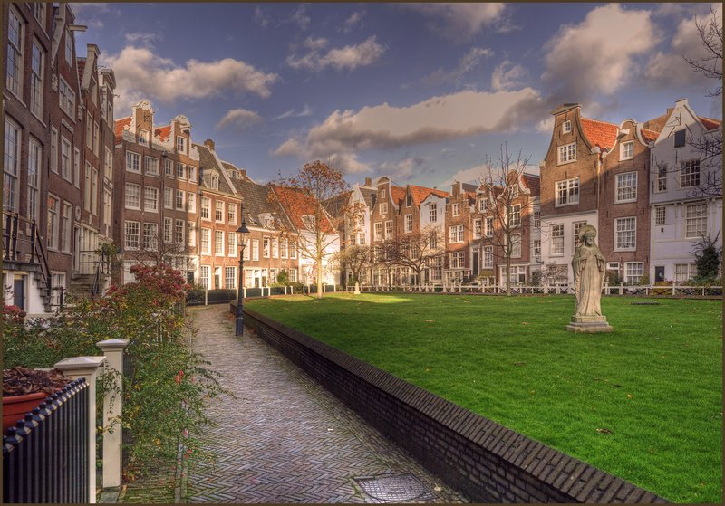
🚶 22 min · 🚕 10 min → hotel
Day 4
🏨 From Hotel: 🚶 10 min · 🚕 5 min → Jewish Historical Museum
1.
Jewish Historical Museum
↳ Four interconnected 17th and 18th-century Ashkenazi synagogues — the Great Synagogue and three others — form the most comprehensive Jewish museum in the Netherlands, documenting 400 years of Jewish life, culture, and survival in the city.
🏛️ Daily 11:00am - 5:00pm
⏰ ~1 hr 30 min
No pictures found.
🚶 15 min · 🚕 8 min → Amsterdam Centraal · 🚢 5 min → EYE Filmmuseum
2.
EYE Filmmuseum
↳ A dramatic white deconstructivist building cantilevered over the IJ waterfront — striking from the ferry and every angle on shore. Inside: one of Europe's finest film archives, rotating exhibitions on cinema history, and a view back across the river to the skyline.
🏛️ Tuesday - Sunday 10:00am - 7:00pm
🚫 Closed Monday
⏰ ~1 hr
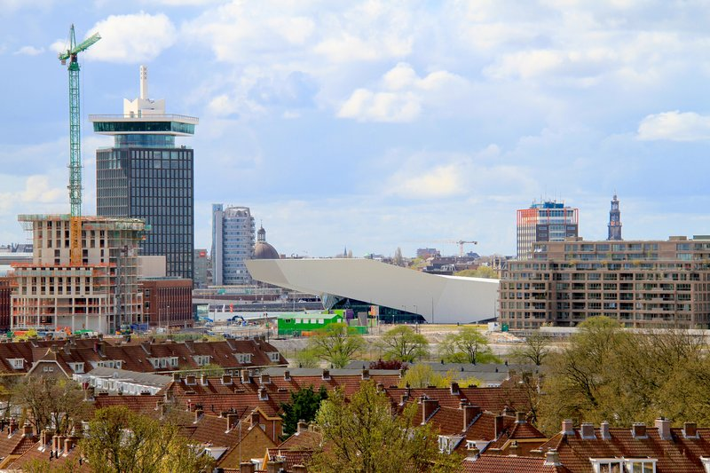
🚶 5 min · 🚕 3 min → A'DAM Lookout
3.
A'DAM Lookout
↳ A 360° observation deck on the 20th floor of the former Shell Tower, with a swing that launches over the building's edge 100 meters above the IJ waterfront. The panorama sweeps across the full city — every canal, every church tower, and on clear days the fields beyond the city.
🏛️ Daily 10:00am - 10:00pm
⏰ ~45 min

🚶 25 min · 🚕 12 min → hotel
Day 5 – Train Day — Utrecht
🏨 From Hotel: 🚶 18 min · 🚕 8 min → Amsterdam Centraal
🚊 Amsterdam Centraal → Utrecht Centraal · NS · 30 min
9:07am Amsterdam Centraal → 9:33am Utrecht Centraal
9:22am Amsterdam Centraal → 9:48am Utrecht Centraal
9:37am Amsterdam Centraal → 10:03am Utrecht Centraal
🚉 ARRIVE Utrecht Centraal: 🚶 10 min · 🚕 5 min → Dom Tower
1.
Dom Tower
↳ The tallest church tower in the Netherlands at 112 meters, built 1321 - 1382. The 465-step guided climb passes through medieval belfry rooms, the clock mechanism, and the 50-bell carillon, ending in a panorama over Utrecht and on clear days the skyline of the city to the north.
🏛️ Daily 10:00am - 5:00pm
⏰ ~1 hr 30 min
⚠️ Guided tours only · 75 min · 465 steps.
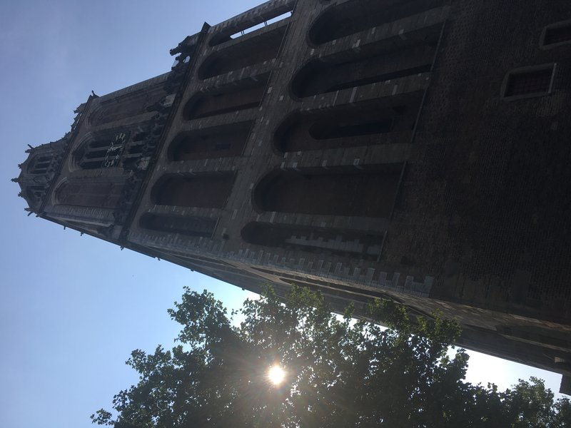
🚶 3 min · 🚕 3 min → Oudegracht
2.
Oudegracht
↳ Utrecht's medieval canal runs two levels deep — the upper street for horse traffic and a lower level of wharf cellars cut directly into the canal banks for unloading ships. Today the cellars are cafés and restaurants open right to the water. No other city in the world has this two-level structure.
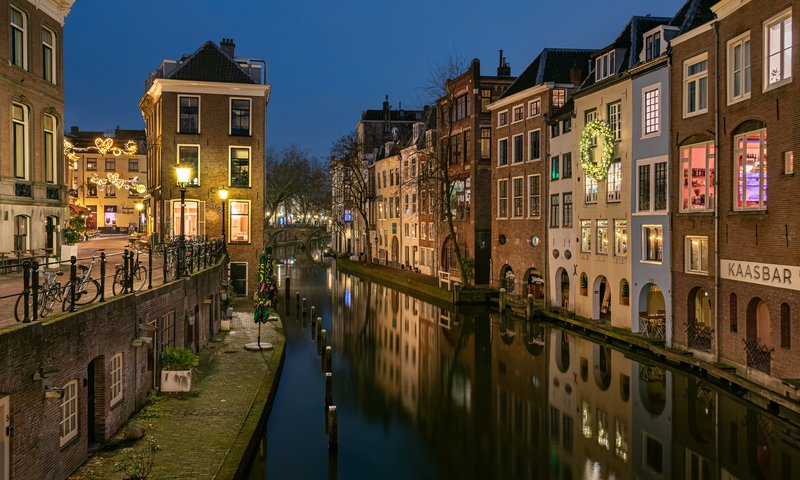
🚶 10 min · 🚕 5 min → Utrecht Centraal
🚊 Utrecht Centraal → Amsterdam Centraal · NS · 30 min
5:07pm Utrecht Centraal → 5:33pm Amsterdam Centraal
5:22pm Utrecht Centraal → 5:48pm Amsterdam Centraal
6:07pm Utrecht Centraal → 6:33pm Amsterdam Centraal
🚉 ARRIVE Amsterdam Centraal: 🚶 18 min · 🚕 8 min → hotel
🗓️ Weekly Closures
Museums · Closed Monday
Churches · Closed Saturday & Sunday
Synagogues · Closed Saturday
📅 Tours
Viator
↳ Small-group morning cruise through the full canal ring before the tourist boats arrive. Electric open sloop, live guide, intimate format — the best time to have the Prinsengracht nearly to yourselves.
🕐 9:00am · ⏳ 90 min · 👥 12 max
🚶 22 min · 🚕 9 min
↳ The most-reviewed canal cruise in the city — open bar with Dutch beer, wine, jenever, and soft drinks included. Live guide, relaxed pace through the UNESCO canal ring.
🕐 11:00am · ⏳ 90 min · 👥 24 max
🚶 50 min · 🚕 11 min
↳ Compact 60-minute electric sloop cruise with a local guide covering the architecture, history, and residents of the canal ring. Small group keeps it conversational.
🕐 10:00am · ⏳ 60 min · 👥 10 max
🚶 50 min · 🚕 11 min
↳ Two-hour walking tour through the Jordaan covering Anne Frank's life, the WWII occupation, and the history of the Jewish Quarter. Ideal before or after visiting the Anne Frank House.
🕐 10:00am · ⏳ 120 min · 👥 15 max
🚶 29 min · 🚕 17 min
↳ A 2.5-hour free-style introduction covering the canal ring, Dam Square, the Jordaan, and the Golden Age with a local guide who takes questions throughout.
🕐 10:30am · ⏳ 150 min · 👥 15 max
🚶 29 min · 🚕 17 min
GetYourGuide
↳ Full-day coach tour north of the city to the Zaanse Schans windmills, the cheese town of Edam, and the fishing villages of Volendam and Marken. Sees preserved 17th-century houses, a clog demonstration, and the polder landscape reclaimed from the sea.
🕐 9:00am · ⏳ 8 hr · 👥 Coach group
🚶 18 min · 🚕 8 min
↳ Compact small-group excursion to the Zaanse Schans windmill village with a local guide. Enters a working industrial windmill, visits a clog workshop, and stops at a Gouda cheese farm before returning to the city.
🕐 9:30am · ⏳ 3 hr · 👥 Small group
🚶 18 min · 🚕 8 min
↳ Full-day trip pairing the Zaanse Schans windmills with Giethoorn, the car-free Venice of the North. Includes a guided one-hour boat ride through Giethoorn's canals beneath its wooden bridges, plus free time in the village.
🕐 8:30am · ⏳ 10 hr · 👥 Coach group
🚶 18 min · 🚕 8 min
↳ One-hour evening cruise through the UNESCO canal ring as the light turns golden. A local skipper points out the canal houses, humpbacked bridges, and landmarks while the boat glides past them at water level.
🕐 8:00pm · ⏳ 60 min · 👥 Small group
🚶 18 min · 🚕 8 min
↳ One-hour open-boat cruise on a quiet electric sloop with a live local skipper. Passes the Westerkerk, Negen Straatjes, Magere Brug, and the Rijksmuseum with unobstructed views for photos through the city's narrow canals.
🕐 12:00pm · ⏳ 60 min · 👥 Small group
🚶 18 min · 🚕 8 min
TripAdvisor
↳ Guided day trip from the city to the Zaanse Schans windmills, Edam, Volendam, and Marken. Stops include a working windmill, a clog demonstration, and the harbours and colourful houses of the old fishing villages.
🕐 9:00am · ⏳ 6 hr 30 min · 👥 Coach group
🚶 18 min · 🚕 8 min
↳ Eight-hour countryside tour taking in the windmills of Zaanse Schans, the cheese town of Edam, and the waterside villages of Volendam and Marken. Includes windmill entry, a clog workshop, and time to wander each village.
🕐 9:00am · ⏳ 8 hr · 👥 Coach group
🚶 18 min · 🚕 8 min
↳ Small-group excursion to the Zaanse Schans open-air museum with a guide. Enters a working windmill, watches traditional clog-making, and visits the Catharina Hoeve cheese farm before heading back to the city.
🕐 9:00am · ⏳ 3 hr 30 min · 👥 Small group
🚶 18 min · 🚕 8 min
↳ Full-day tour combining Giethoorn, the Afsluitdijk causeway, and the Zaanse Schans windmills. Includes a one-hour boat cruise through Giethoorn's canals, the windmill village, and a clog and cheese demonstration.
🕐 8:00am · ⏳ 10 hr · 👥 Max 8
🚶 18 min · 🚕 8 min
↳ Long day trip to the fairytale village of Giethoorn and the Zaanse Schans windmills. Includes a guided boat ride through Giethoorn's reed-lined canals and time at the windmill village with its clog and cheese craftsmen.
🕐 8:30am · ⏳ 10 hr 30 min · 👥 Coach group
🚶 18 min · 🚕 8 min
☕ Cappuccino
Box Sociaal · 4.7⭐ · 2600+ reviews
De Bakkerswinkel · 4.5⭐ · 700+ reviews
🏛️ Monday - Friday 8:00am - 5:00pm · Saturday 8:30am - 5:00pm · Sunday 9:00am - 5:00pm
🚶 6 min · 🚕 3 min
Scandinavian Embassy · 4.6⭐ · 800+ reviews
Friedhats · 4.8⭐ · 500+ reviews
🏛️ Monday - Friday 8:00am - 5:00pm · Saturday - Sunday 9:00am - 5:00pm
🚶 18 min · 🚕 7 min
Coffee&Coconuts · 4.6⭐ · 2000+ reviews
🫕 Restaurants Near Hotel
SOTTO Pizza · 4.6⭐ · 900+ reviews
↳ Neapolitan pizza with San Marzano tomatoes and buffalo mozzarella.
🏛️ Daily 12:00pm - 10:30pm
🚶 5 min · 🚕 3 min
Eik & Linde · 4.5⭐ · 400+ reviews
↳ Classic brown bar since 1967; stamppot, bitterballen, and Dutch beer.
🏛️ Daily 11:00am - 1:00am
🚶 7 min · 🚕 4 min
Dignita Hoftuin · 4.6⭐ · 1800+ reviews
↳ All-day café with great coffee and brunch dishes in De Plantage.
🏛️ Daily 8:30am - 5:00pm
🚶 8 min · 🚕 4 min
Restaurant De Plantage · 4.5⭐ · 1200+ reviews
↳ Dutch-French seasonal menu in a 19th-century conservatory near Artis.
🏛️ Daily 11:00am - 11:00pm
🚶 10 min · 🚕 5 min
Cannibale Royale · 4.5⭐ · 2500+ reviews
↳ American-style steakhouse with consistently great spare ribs and burgers.
🏛️ Daily 12:00pm - 11:00pm
🚶 15 min · 🚕 6 min
🍽️ Downtown Restaurants
Café de Klos · 4.5⭐ · 3500+ reviews
↳ Legendary spare-rib institution since 1978; smoky and no-nonsense.
🏛️ Daily 5:00pm - 10:30pm
Café Luxembourg · 4.4⭐ · 2800+ reviews
↳ Classic grand café on the Spui — the definitive city brasserie; go for lunch.
🏛️ Daily 9:00am - 1:00am
Restaurant Greetje · 4.5⭐ · 1100+ reviews
↳ Traditional Dutch cuisine in the center; elevated stamppot and seasonal produce.
🏛️ Tuesday - Sunday 5:00pm - 10:00pm
🚫 Closed Monday
Gastrobar De Nes · 4.5⭐ · 1200+ reviews
↳ Modern Dutch small plates and natural wines on the historic theatre street.
🏛️ Tuesday - Saturday 5:00pm - 10:30pm
🚫 Closed Sunday & Monday
Café Americain · 4.3⭐ · 4800+ reviews
↳ Art Nouveau grand café from 1902 — the most beautiful café interior in the city.
🏛️ Daily 7:00am - 10:30pm
🍮 Local Tastes
Bitterballen
↳ Deep-fried crispy ragout balls served hot with Dutch mustard — the essential city bar snack. Beef or veal bound in thick béchamel, panko-crusted and fried to order.
Hollandse Nieuwe Haring
↳ Raw herring served sliced into pieces with raw onion and pickles — eaten with a toothpick. Season runs May to July; the first catch goes to the King and the second to the city.
Stroopwafel
↳ Two thin waffle discs sandwiched with caramel syrup — invented in Gouda and adopted by the city. Best hot off the iron at a market stall where the syrup is still molten.
Jenever
↳ Dutch gin — ancestor of London dry, distilled from malt wine and juniper. Served in a tulip-shaped glass filled to the brim. Jonge is lighter; oude is richer and more complex.
Poffertjes
↳ Tiny fluffy buckwheat pancakes cooked in a special cast-iron mould, served in a heap of 15 to 20 with butter and powdered sugar — a Dutch street food classic.
🎭 Shows, Performances & Concerts
Royal Concertgebouw
↳ One of the world's most acclaimed concert halls — home of the Royal Concertgebouw Orchestra, celebrated for extraordinary acoustics and world-class programming.
🚶 28 min · 🚕 12 min
Royal Theater Carré
↳ Victorian circus hall from 1887 on the Amstel — 1760 seats hosting musicals, opera, dance, and comedy from Dutch and international companies.
🎟️ carre.nl
🚶 12 min · 🚕 5 min
🚌 Getting Around
🚕 Ride Apps
🚎 Tram
↳ GVB trams serve the main tourist areas — Museumplein · Leidseplein · Centraal.
Amsterdam has a tram system — operated by GVB. Lines used on this trip: 24.
🚢 Ferry
↳ Free GVB ferry connecting Amsterdam Centraal to Amsterdam Noord.
Amsterdam has a ferry — operated by GVB. Route: Centraal → Noord.
🚆 Train Stations Near Hotel
🚊 Amsterdam Centraal
NS Intercity · Sprinter → Utrecht · Rotterdam · Schiphol · Haarlem · Delft.
🚶 18 min · 🚕 8 min
🚄 Amsterdam Centraal
Thalys → Brussels · Paris · Cologne · Eurostar → London.
🚶 18 min · 🚕 8 min
⛲️ Day Trips by Train
Haarlem · 20 min by NS Sprinter
↳ One of the best-preserved medieval cities in the Netherlands. The Frans Hals Museum holds the world's greatest collection of Dutch Golden Age group portraits. The Grote Markt is among the finest medieval squares in Northern Europe.
Leiden · 35 min
↳ University city and birthplace of Rembrandt, with a clutch of specialist museums — the Rijksmuseum van Oudheden holds a complete Egyptian temple — and a canal-laced medieval centre denser than Amsterdam.
Rotterdam · 40 min by NS Intercity
↳ Europe's largest port and boldest modern skyline — the Cube Houses, Markthal, Depot Boijmans Van Beuningen, and Erasmusbrug define a city completely rebuilt after WWII. It looks like no other Dutch city.
The Hague · 50 min
↳ The Dutch seat of government and home of the Mauritshuis — one room holds Vermeer's Girl with a Pearl Earring and Rembrandt's The Anatomy Lesson. The Peace Palace and the North Sea beach at Scheveningen are 10 minutes apart.
Delft · 60 min by NS Intercity
⭐ Michelin Restaurants
⭐⭐ Restaurant 212
↳ No tables — only a bar facing an open kitchen; radically informal two-star.
🚶 17 min · 🚕 7 min
⭐⭐ Ciel Bleu
↳ French fine dining on the 23rd floor of Hotel Okura with panoramic city views.
🚶 32 min · 🚕 9 min
⭐⭐ Flore
↳ Plant-forward two-star; Green Star for sustainability. Refined seasonal menu.
🚶 36 min · 🚕 11 min
⭐ Choux
↳ Contemporary Dutch cuisine; precise technique in a relaxed room near Centraal.
🚶 33 min · 🚕 8 min
⭐ Bolenius
↳ Dutch produce from the restaurant's own garden; leading sustainable dining.
🚕 16 min
Not shown: 0 ⭐⭐⭐ · 2 ⭐⭐ · 15+ ⭐ more in the city.